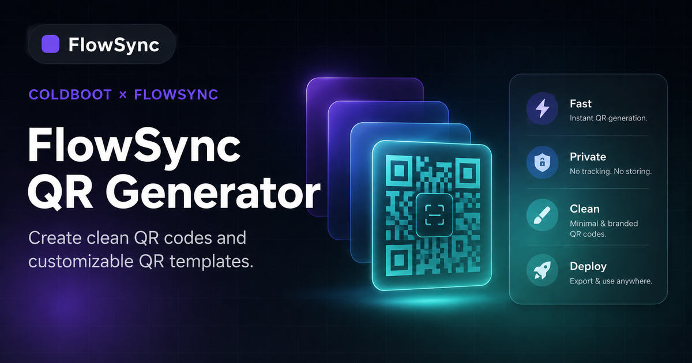

FlowSync
Pricing
Simple pricing for a static QR tool.
The current FlowSync version is free because it runs in the browser and does not use login, database, scan tracking, or cloud storage.
Free
$0 / forever
Best for normal QR codes, personal use, portfolio links, menus, and quick sharing.
- URL, text, Wi-Fi, email, phone, SMS
- Logo upload and color control
- PNG and SVG download
- No tracking and no saved data
Creator
Later
Useful if you later add saved templates and faster repeated QR creation.
- Saved design presets
- Recent QR history
- More export sizes
- Brand templates
Dynamic
Custom
For editable QR links, scan analytics, team access, and campaigns.
- Edit destination after download
- Scan count and analytics
- Campaign folders
- Cloud saved QR codes
What works now vs what needs backend
FeatureStatusNote
Static QR generationAvailableWorks inside the browser.
PNG and SVG downloadAvailableGood for normal use and design work.
Saved QR historyCan addUse localStorage for browser-only saving.
Scan analyticsBackend neededRequires redirect server and database.
Editable QR destinationBackend neededRequires dynamic short links.